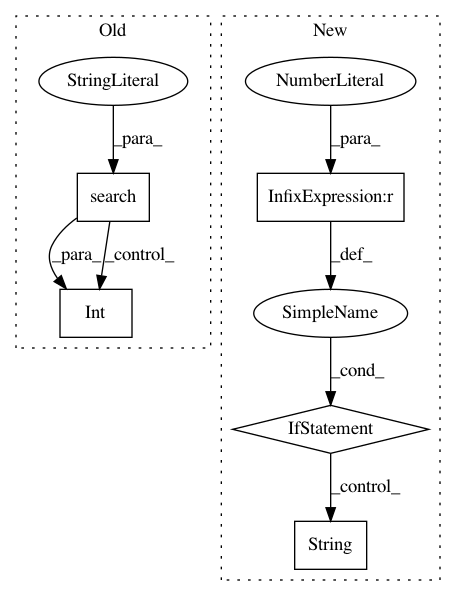

6d27701311a5d0f013cf608dc5947e2fd0813882,hls4ml/model/hls_model.py,WeightVariable,update_precision,#WeightVariable#Any#,428
Before Change
if "int" in self.type.precision:
self.precision_fmt = "%d"
else:
match = re.search(".+<(.+?)>", self.type.precision)
if match is not None:
precision_bits = match.group(1).split(",")
decimal_bits = int(precision_bits[0]) - int(precision_bits[1])
decimal_spaces = int(np.floor(np.log10(2 ** decimal_bits - 1))) + 1
self.precision_fmt = "%.{}f".format(decimal_spaces)
else:
self.precision_fmt = "%f"
After Change
integer_bits = int(precision_bits[1])
fractional_bits = integer_bits - width_bits
lsb = 2 ** fractional_bits
if lsb < 1:
// Use str to represent the float with digits, get the length
// to right of decimal point
decimal_spaces = len(str(lsb).split(".")[1])
else:
decimal_spaces = len(str(2**integer_bits))
self.precision_fmt = "%.{}f".format(decimal_spaces)
else:
self.precision_fmt = "%f"
In pattern: SUPERPATTERN
Frequency: 3
Non-data size: 5
Instances
Project Name: hls-fpga-machine-learning/hls4ml
Commit Name: 6d27701311a5d0f013cf608dc5947e2fd0813882
Time: 2020-05-04
Author: sioni.summers10@imperial.ac.uk
File Name: hls4ml/model/hls_model.py
Class Name: WeightVariable
Method Name: update_precision
Project Name: mlpack/benchmarks
Commit Name: a60c0d90de304b8d2768da0e2110527edea96910
Time: 2017-06-29
Author: ryan@ratml.org
File Name: methods/shogun/linear_ridge_regression.py
Class Name: LinearRidgeRegression
Method Name: RunMetrics
Project Name: mlpack/benchmarks
Commit Name: a60c0d90de304b8d2768da0e2110527edea96910
Time: 2017-06-29
Author: ryan@ratml.org
File Name: methods/scikit/linear_ridge_regression.py
Class Name: LinearRidgeRegression
Method Name: RunMetrics